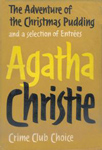
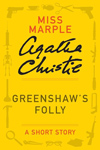
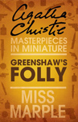
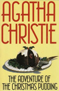
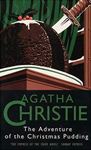
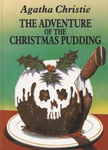
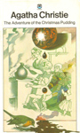
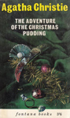

1960 - Greenshaw's Folly
Greenshaw's Folly is a short story included in The Adventure of the Christmas Pudding and a Selection of Entrées, a short story collection written by Agatha Christie and first published in the UK by the Collins Crime Club on 24 October 1960. It is the only Christie first edition published in the UK that contains stories with both Hercule Poirot and Miss Marple, the writer's two most famous detectives.








Screen Versions
Greenshaw's Folly was adapted as part of the sixth series of Agatha Christie's Marple, starring Julia McKenzie. The plot element of The Thumb Mark of St. Peter was woven into the adaptation. The story is embellished, but keeps to the core of the original.

2013
Miss Marple
-
Julia McKenzie
Louisa Oxley
-
Kimberley Nixon
Archie Oxley
-
Bobby Smalldridge
Alfred Pollock
-
Martin Compston
Cracken
-
Vic Reeves (as Jim Moir)
Mrs. Cresswell
-
Julia Sawalha
Miss Katherine Greenshaw
-
Fiona Shaw
Nat Fletcher
-
Sam Reid
Horace Bindler
-
Rufus Jones
Grace Ritchie
-
Joanna David
Father Brophy
-
Robert Glenister
Cicely Beauclerk
-
Judy Parfitt
Minnie Tulliver
-
Candida Gubbins
Inspector Welch
-
John Gordon Sinclair
Cayley
-
Matt Willis
Philip Oxley
-
Oscar Pearce
Parsons
-
Duncan Casey
Directors
-
Sarah Harding
Screenplay
-
Tim Whitnall